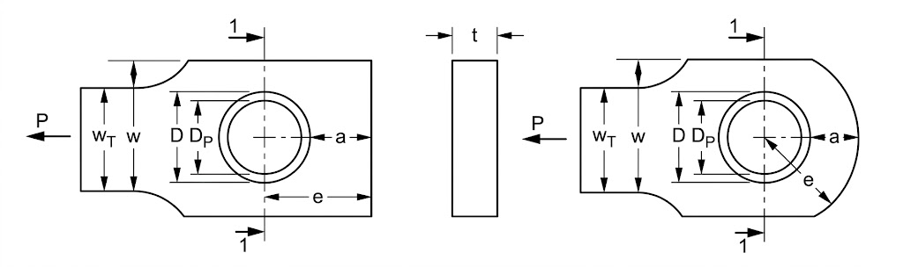
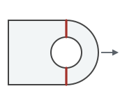
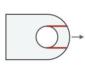
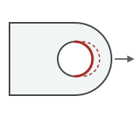
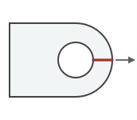
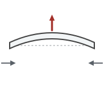
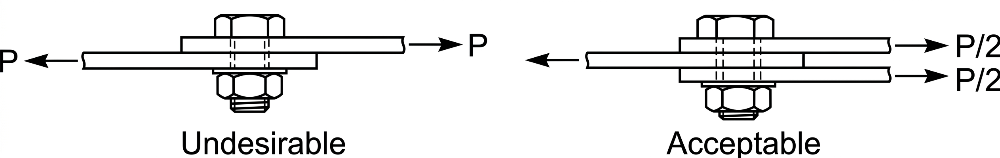
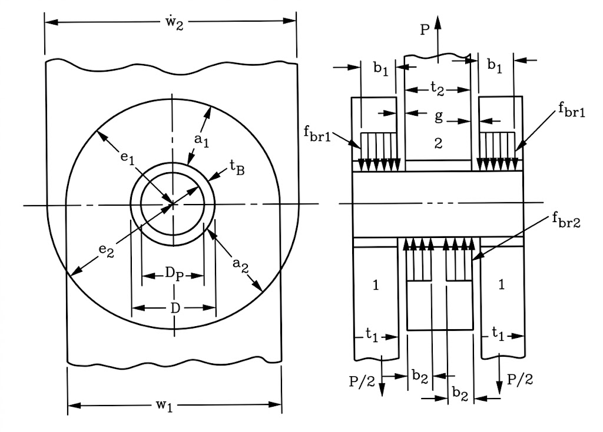
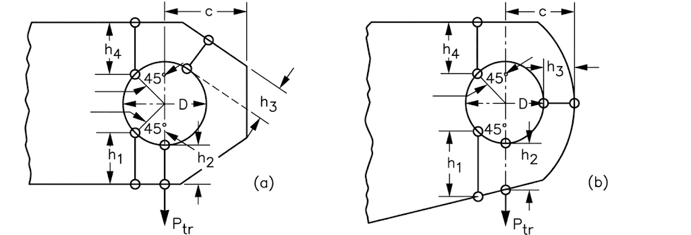
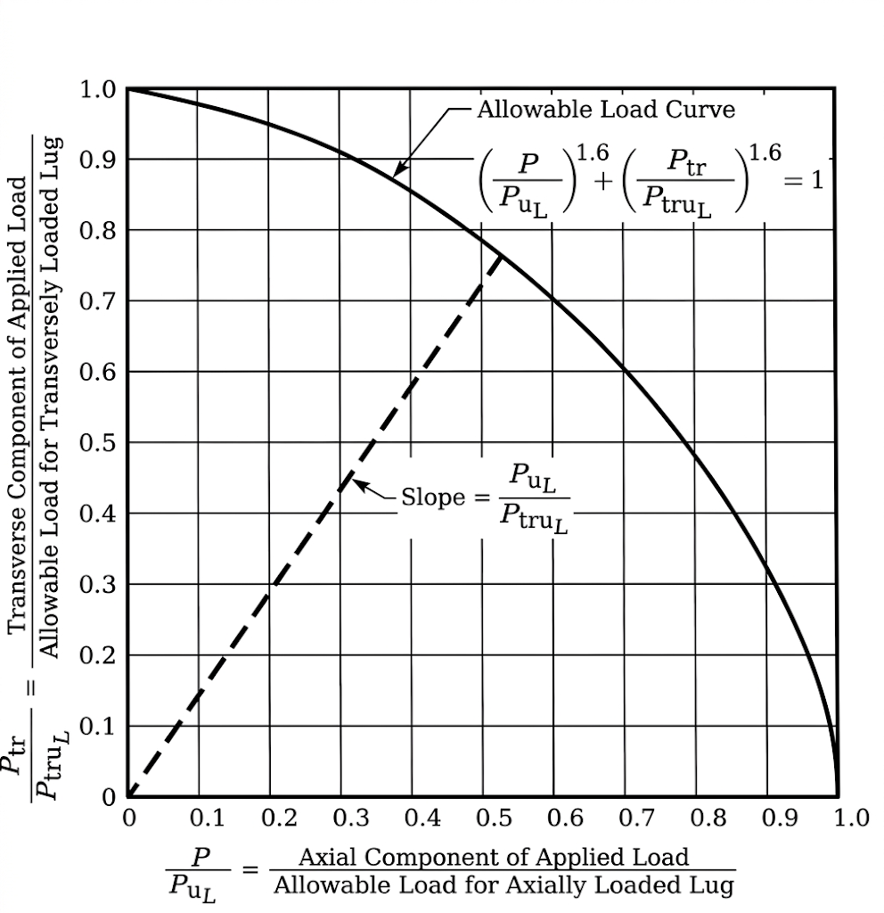

Lug and Pin Analysis — Bruhn Chapter D1 Bearing-Bypass, Net-Section, Shear Tear-Out, Pin Shear and Bending
Axial and transverse lug allowables, pin shear and bending, and bushing bearing, worked by the Bruhn Chapter D1 method. Every margin names the check that governs it, and the ƒ icons show the formula behind each result.
Show detailed calculation steps
This page follows the Air Force Method, set out in Section 9 of the Stress Analysis Manual of the Air Force Flight Dynamics Laboratory (AFFDL-TR-69-42). Bruhn Chapter D1 reproduces the same curves, so the two names describe one method. It is empirical: the interaction between bearing, shear-out and hoop tension is messy enough that the manual rolls it into coefficients read off test-derived charts rather than deriving each mode separately.

The five failure modes
A pin-loaded lug can fail by tension across the net section, shear-out along two planes ahead of the hole, bearing against the pin, hoop tension across a single plane, or by buckling out of plane (“dishing”) if it is thin. The method folds the middle three — bearing, shear-out and hoop tension — into a single allowable, because in a real lug they are not independent.





Axial loading
The bearing allowable is P = K · Fu · D · t,
where K comes from Figure 9-2 as a function of e/D and D/t. That one
coefficient is what carries the combined bearing, shear-out and hoop
tension behaviour. Net-section tension is checked separately as
P = Kn · Fu · (W − D) · t, with
the net-tension coefficient Kn from Figure 9-4 — a knockdown for
the stress concentration at the hole that depends on the material's
ultimate and yield strengths, modulus and ultimate strain.
In both, Fu is not simply Ftu: the manual caps
the effective ultimate at
min(Ftu, 1.304 · Fty), which binds on materials with
a high yield-to-ultimate ratio. That cap is applied here and shown in
the calculation steps.
Single shear against double shear
In a single-shear joint the two members are offset, so the load path is eccentric: the pin carries the whole load on one plane and the offset drives a bending moment through the joint. A double-shear (clevis) joint splits the load either side of the inner lug, halving the load on each pin plane and keeping the load path balanced. This is why the pin shear condition below changes the answer, and why the clevis gap sets the pin bending arm.


Transverse loading
Loading a lug across its axis rather than along it engages a different, more redundant load path, so it gets its own coefficient family from Figure 9-8. That curve is driven by an effective edge distance hav, averaged from four radial distances between the hole and the lug boundary — which means a proper transverse check needs more of the lug outline than a single edge distance describes.

Oblique loading
A load at an angle is resolved into its axial and transverse components and recombined against the two pure allowables by a power-law interaction, with an exponent of 1.6:
\( \left(\dfrac{P_{ax}}{P_{u}}\right)^{1.6} + \left(\dfrac{P_{tr}}{P_{tru}}\right)^{1.6} = 1 \)
The exponent matters. A plain ellipse (exponent 2) reads about 9% high at 45°, in the unconservative direction. The “allowable vs load angle” chart above is this envelope, sliced along the applied angle.

The lug is checked three ways at the applied load angle, and the lowest allowable governs:
-
Bearing-bypass —
Kt · Ftu · D · t, with Kt read from the axial or transverse curve family. -
Net-section tension —
Ftu · (W − D) · tthrough the pin hole. -
Shear tear-out —
2 · Fsu · t · L, whereL = e − D/2is the clear distance from the hole boundary to the lug edge.
Angled loads are interpolated between the pure axial and pure transverse allowables by the 1.6-power interaction above. The pin is checked in shear across one or two planes and in simplified bending across the clevis gap, and an optional bushing is checked in bearing.
Reading a margin
MS = Pallow/P − 1. A margin at or above +0.15 shows as PASS, between 0 and +0.15 as MARGINAL, and below zero as FAIL. Those bands are a display convention on this page, not a certification requirement — the margin your programme demands is the one that governs.
Read the curve-fit notice above before using any of these numbers. In
short: the Kt curves are shape-matched approximations rather
than digitized Bruhn charts, Kn is assumed to be 1.0, the
transverse net-section allowable is a flat knockdown of the axial value
because there is no separate transverse-width input yet, and pin bending
uses a first-pass M = P·g/8 rather than the real
bearing-pressure distribution.
Two further gaps worth knowing. There is no out-of-plane buckling check, which can govern a thin lug. And only the inner lug is modelled — a real clevis fails at whichever of the inner or outer lugs is weakest, and the outer lugs are not sized here. The single/double shear toggle changes only the pin's shear planes.
Materials
Properties come from the same MIL-HDBK-5 dataset behind the Material Property Lookup, so Ftu, Fty, Fsu and Fbru are published allowables rather than typical values. The short list covers the common aerospace picks; ticking Full MIL-HDBK-5 database opens every published condition — alloy, product form, temper, thickness band and A/B/S basis — along with grain direction and a service temperature that derates the strengths off the effect-of-temperature curves.
Where a bearing allowable is not published for a condition, it is
derived as 1.304 · Fcy. The Kt ductility
group is inferred from elongation (under 5% low, over 12% high), since
the handbook selects that curve family by material type and the dataset
carries elongation rather than the family. Both are approximations and
are named in the calculation steps.
The coefficient charts the Air Force method is built on, digitized point-for-point from the scanned plots and redrawn here so a value can be read off a curve rather than interpolated by eye. Hover any curve for a readout; each series is densified to a fine grid, so the tooltip tracks the line continuously instead of snapping between digitized vertices.
These are reference charts, not yet the calculator’s inputs. The engine above still uses the shape-matched approximations described in the notice at the top of the page. Wiring these curves in is what will retire that notice.
Figure 9-2. Allowable uniform axial load coefficient. Valid for D/t ≤ 5, which covers most lugs. The curve is one line; it is split here because the formula it feeds changes at e/D = 1.5 — below that the allowable is K · a · t · Ftux using the nose distance a, above it K · D · t · Ftux using the hole diameter. The minimum of 1.33 sits exactly at the changeover.
Figure 9-3. Bearing efficiency factors, used in place of Figure 9-2 once D/t exceeds 5. Note the abscissa is a/D, not e/D. The dashed cutoffs cap K for aluminium: (A) for hand forged billet with the long transverse grain across the lug, (B) for plate, bar and hand forged billet with the short transverse grain across it. The original also caps K at 2.00 for lugs cut from aluminium 0.5″ or thicker. The chart is drawn for aluminium alloys and alloy steel below 160 ksi.
Figure 9-4(b). Net-tension stress coefficient for Fty/Ftu = 1.0. The net-section allowable is Kn · Ftu · (w − D) · t. Kn is a knockdown for the stress concentration at the hole, relieved by the material's ability to yield — which is why the curve family is indexed on Ftu/(E·εu), a measure of how brittle the material is.
Figure 9-4(c). Net-tension stress coefficient for Fty/Ftu = 0.8. Interpolate between panels on the yield-to-ultimate ratio; most structural alloys land between this panel and (b).
Figure 9-4(d). Net-tension stress coefficient for Fty/Ftu = 0.6. The lowest ratio the manual plots; below it the curves are extrapolated rather than read.
Figure 9-8. Transverse ultimate and yield load coefficients against the effective edge distance hav/D. The two curves run together to about hav/D = 0.8 and then separate, Ktru above Ktry. The transverse allowable is Ktru · Ftux · D · t; there is no separate transverse net-section check in the method.
Figure 9-10. Effective edge distance for a concentric lug with parallel sides — the geometry this calculator draws. For that shape hav/D reads straight off e/D, which sidesteps measuring the four radial distances h1–h4 of Figure 9-7 and working the nomograph of Figure 9-9. It is the reason a transverse check here does not need a separate transverse-width input.